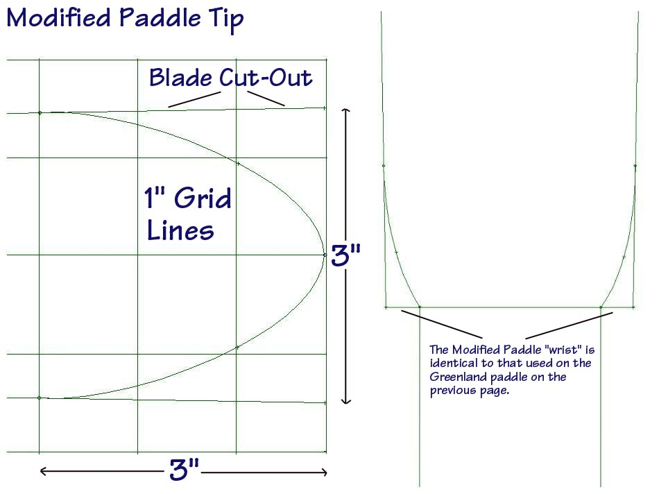

| Greenland Paddle Construction | Menu Last Page Next Page |
|
 The Modified Paddle "wrist" area is identical to that of the Greenland Paddle. The Modified Paddle tip is essentially an Aleut paddle tip and is layed out in the above drawing using a grid comprised of 1" squares. I have found the Aleut tip to be a bit smoother and quieter on entry, though either type works fine. Due to it's rounded shape, the GP tip is a bit more durable. |
|